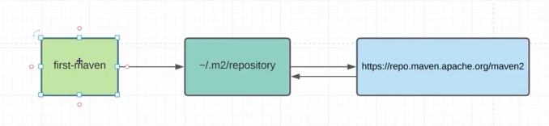

Maven. 8. Dependency management
Познакомимся с одним из основных тегов - <dependencies></dependencies>. Этот тег
используется нами, а точнее maven проектами в том случае, когда нам необходимо привнести новую зависимость в
проект. Т.е. по другому говоря, .jar файлы.
В тэге <dependencies></dependencies> можем указывать только тег <dependency>
</dependency>. Таким образом можем подключать множество зависимостей и они будут в CLASSPATH нашего
проекта. Для подключения зависимостей нужно подключать уникальный идентификатор, который состоит из трёх
основных
элементов:
<groupId></groupId>
<artifactId></artifactId>
<version></version>
Например, если хотим подключить зависимости сервлетов, то пишем:
<dependencies>
<dependency>
<groupId>jakarta.servlet</groupId>
<artifactId>jakarta.servlet-api</artifactId>
<version>5.0.0</version>
</dependency>
</dependencies>
Но когда мы их подключили, перейдя в класс и захотим написать сервлет, то в CLASSPATH не будет видна зависимость. Для этого мы должны "подтянуть" эту зависимость. Подтянуть - означает скачать зависимость в директорию локального репозитория под названием .m2, а именно .m2/repository. Этот репозиторий хранится локально и он является общим для всего локального компьютера и будет видна во всех проектах.
Поэтому, переходим в эту директорию. Это дефолтная репозитория локального репозитория. В ней есть директория /repository. Именно .m2/repository используется maven'ом для скачивания сторонних зависимостей из удалённого репозитория. Перейдя в этот репозиторий можно посмотреть все зависимости, которые уже скачаны.
Что у нас получается:
У нас есть проекты (first-maven в данном случае) и все они ищут зависимости локально на машине в директории пользователя ~/.m2/repository. Если в этой директории не нашлось зависимости, то maven идёт в удаленный репозиторий, который прописан в super pom: https://repo.maven.apache.org/maven2. И оттуда, если нашлись зависимости, то скачиваются в локальный репозиторий и можем использовать в проекте. В следующий раз уже не пойдёт в удалённый репозиторий, если уже будет выкачано локально.
В случае с нашим примером с jakarta: в .m2/repository должна лежать директория jakarta, в которой лежит директория servlet. Если туда зайдём, то увидим jakarta.servlet-api, а внутри неё будет директория 5.0.0, потому-что версий может быть множество. И уже внутри этой директории будет лежать зависимость.
Перейдя в зависимость можно увидеть -sources.jar (отдельно jar с исходными кодами, по умолчанию maven всегда их подхватывает), дальше видим саму .jar с зависимостями скомпилированными и ещё .pom. Ещё есть .sha1, но оно сейчас не нужно, потому что используется для взаимодействия с удалёнными репозиториями. Теперь можем споконо использовать .jar в нашем проекте. Естественно, .m2/repository можно переписать, но она уже находится не в super pom, в настройках нашего maven: ${maven}/conf/settings.xml. Именно в этом settings.xml можем поправить дефолтные репозитории, если захотим. Но лучше этого не делать.
Мы увидили её в локальном репозитории, но почему-то у нас всё ещё сервлет не видит класс HttpServlet. Все потому что должны ещё заимпортить .jar в наш проект из нашего локального репозитория.
Более того, теперь мы видим все зависимости, которые нам подключил maven из локального репозитория. Таким образом, мы очень легко и просто можем подключать зависимости в наш проект.